suzuki-naviのセルオートマトンによるCPU作成
-
セルオートマトンによるCPU作成 (2022/12/02 はてなブログ)
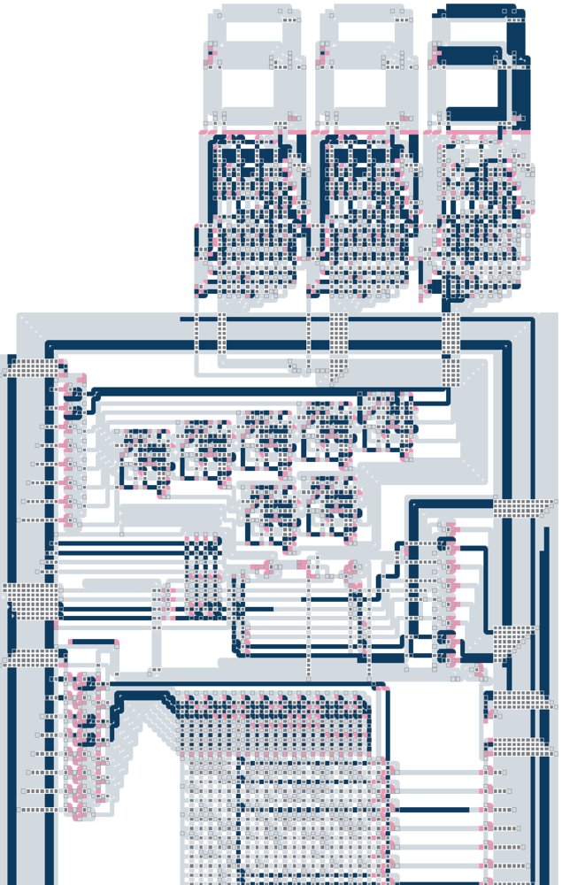
-
セルオートマトンの概要 (2022/12/04)
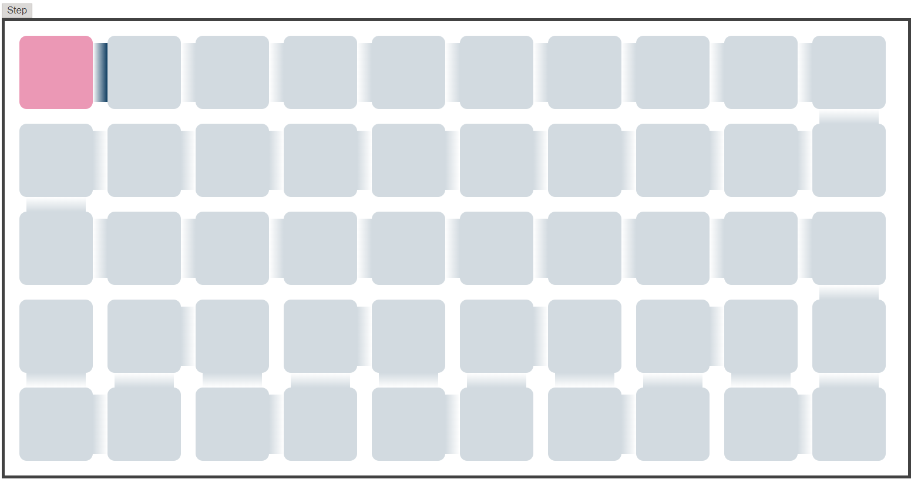
-
セルオートマトンの規則 (2022/12/05)
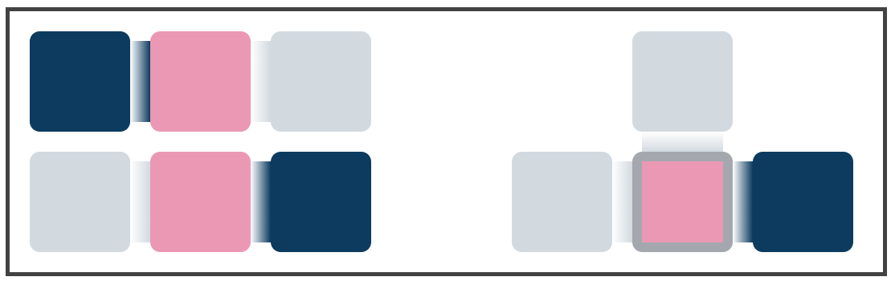
-
AND回路・OR回路・NOT回路 (2022/12/08)
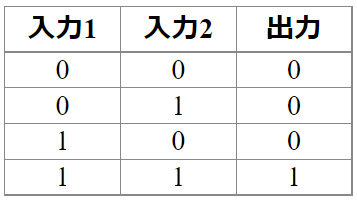
-
加算器 (2022/12/09)
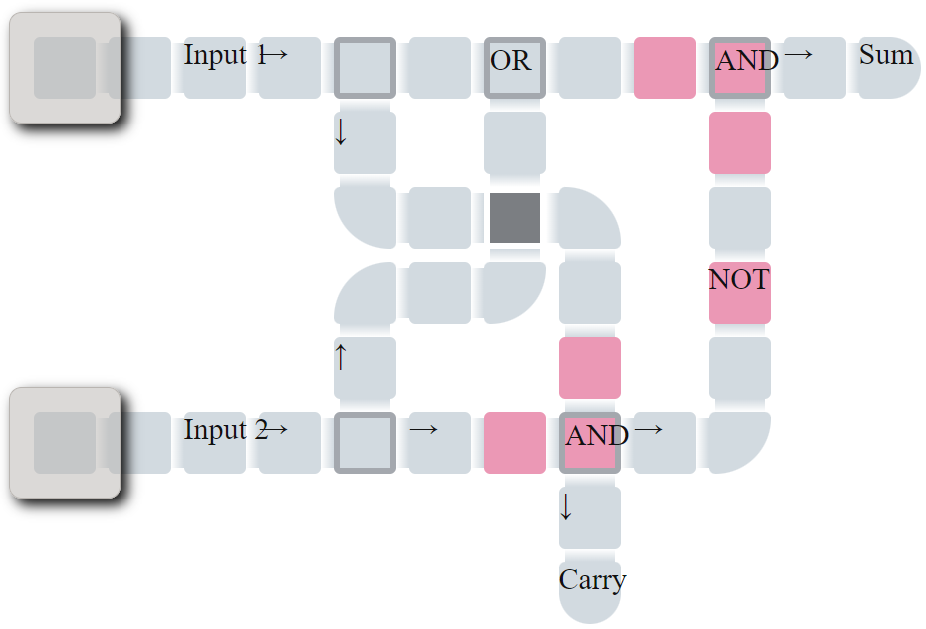
-
自己保持回路 (2022/12/12)
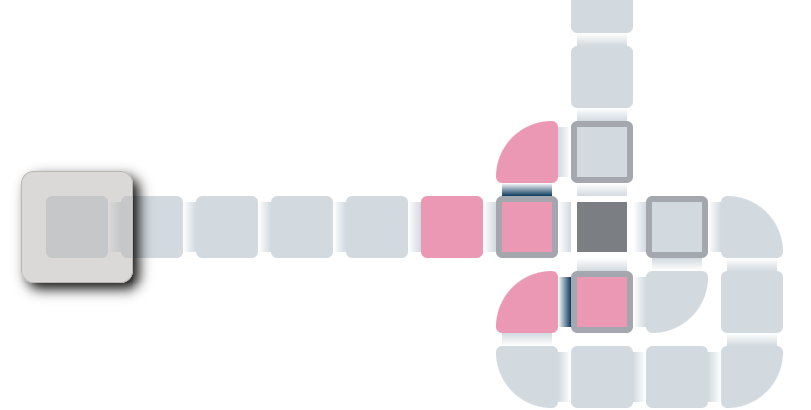
-
カウンタ (2022/12/14)
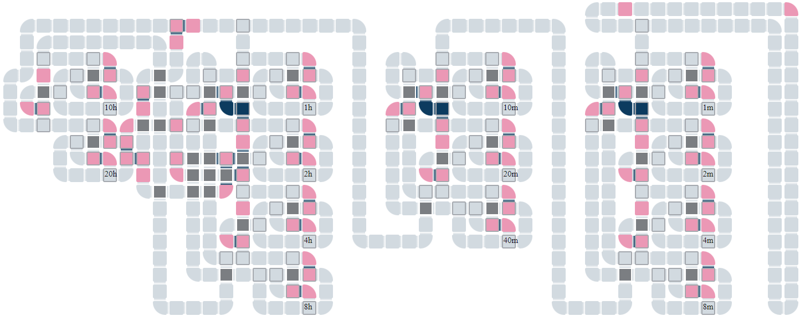
-
7セグメントディスプレイ その1 (2022/12/16)
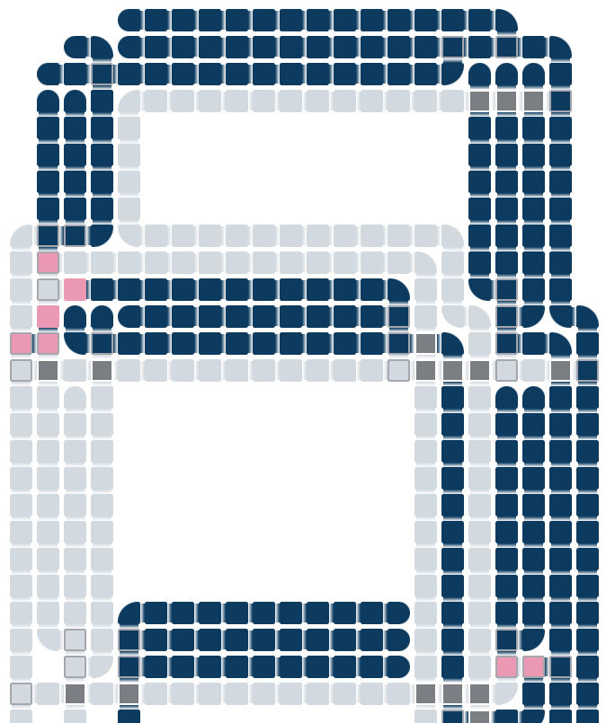
-
デコーダ (2022/12/20)
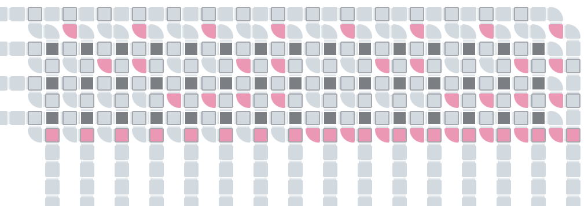
-
7セグメントディスプレイ その2 (2022/12/21)
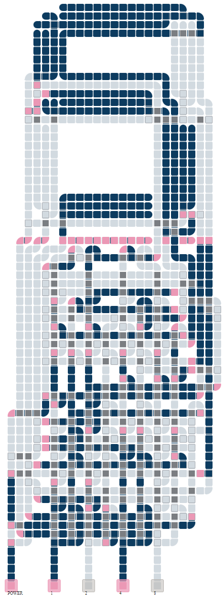
-
リセット機能付きカウンタ (2022/12/22)
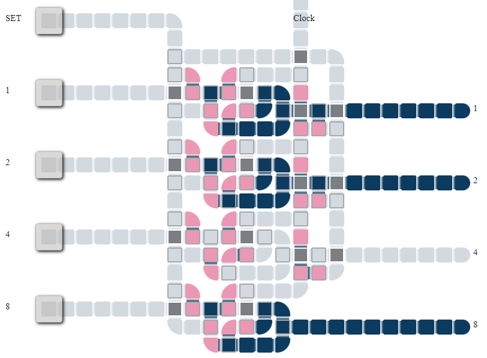
-
7セグメントディスプレイ付きバイナリ時計 (2023/01/04)
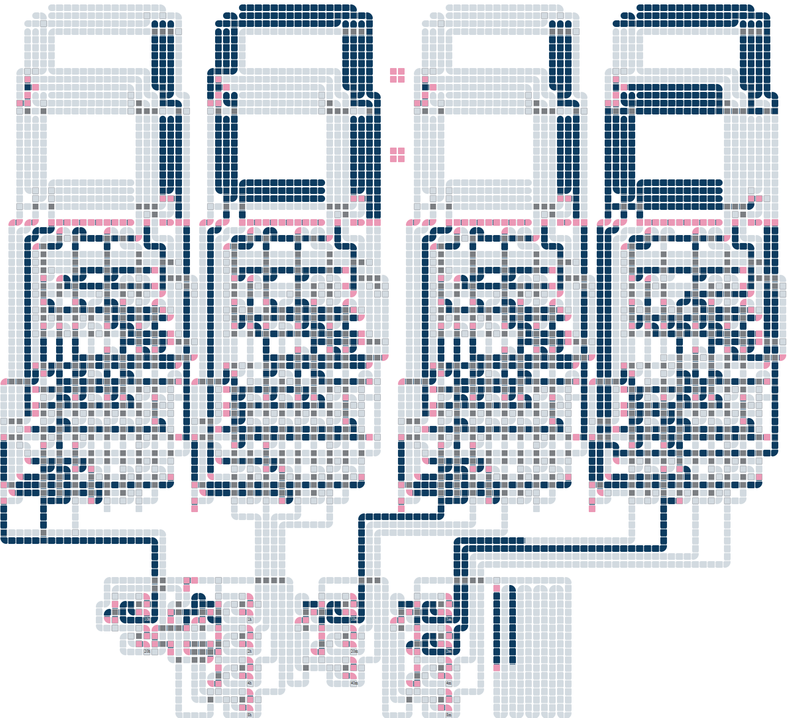
-
整数の除算は乗算でできる話 (8ビット整数を10で割りたいときは205を掛ければよい) (2023/01/06 Qiita)
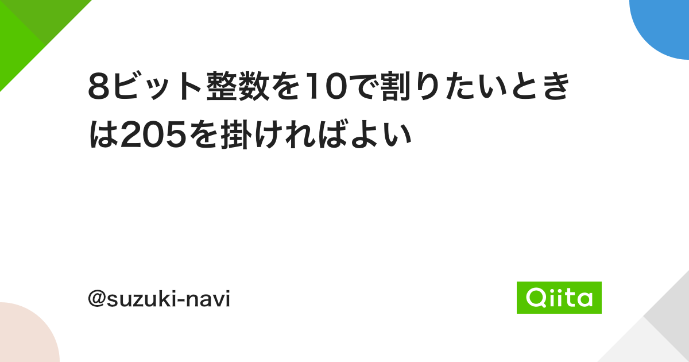
-
2進数を10進数に変換するDouble Dabble (2022/12/18 Qiita)
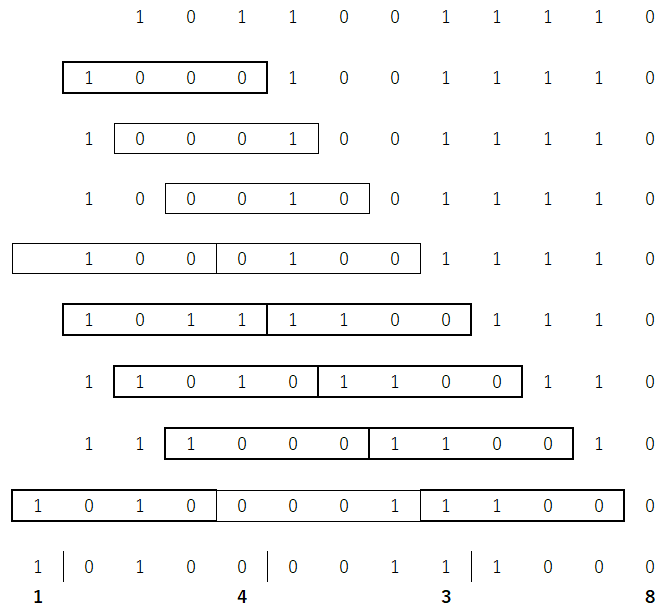
-
7セグメントディスプレイ その3 (2023/01/10、追記2023/01/18)
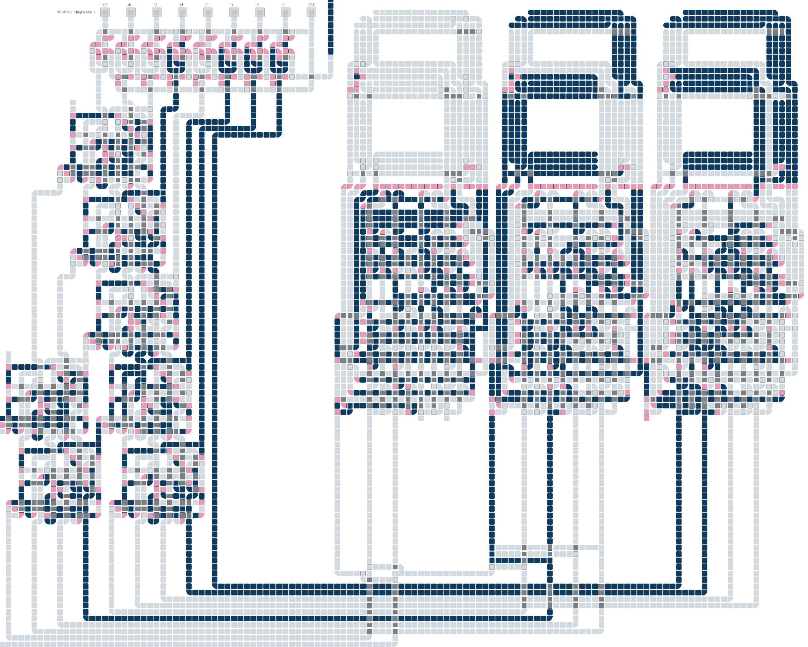
-
乗算器 (2023/01/13)
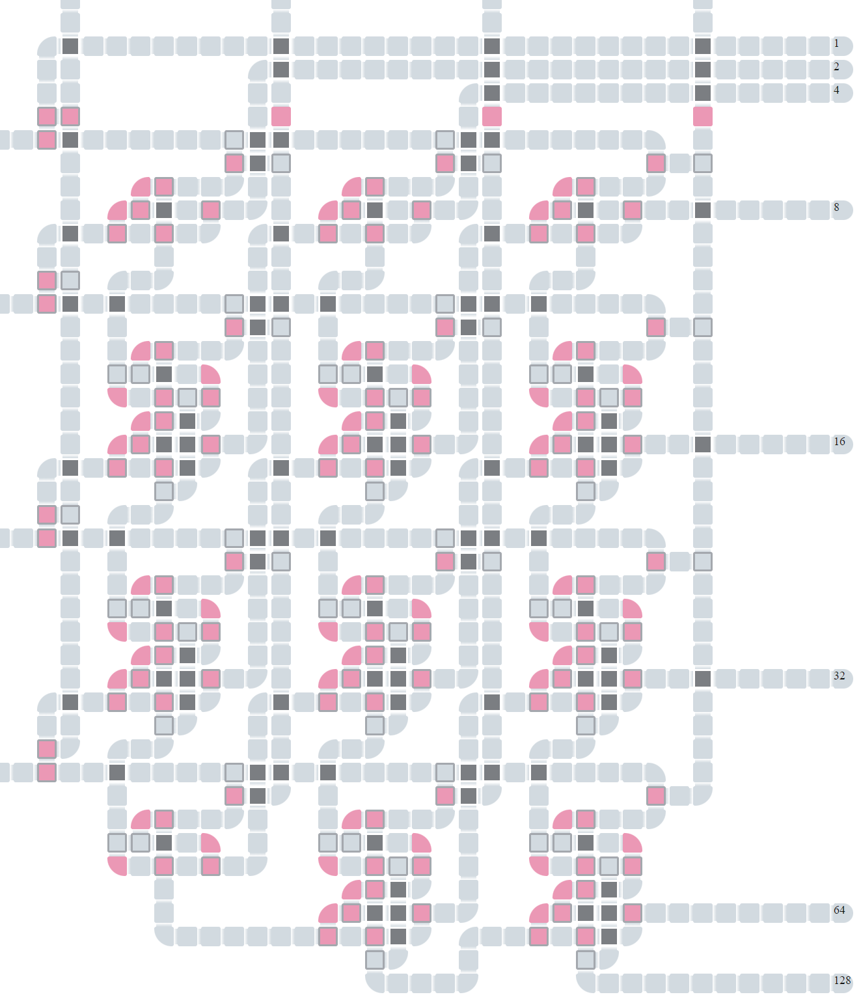
-
フィボナッチ数列 その1 (2023/01/19)
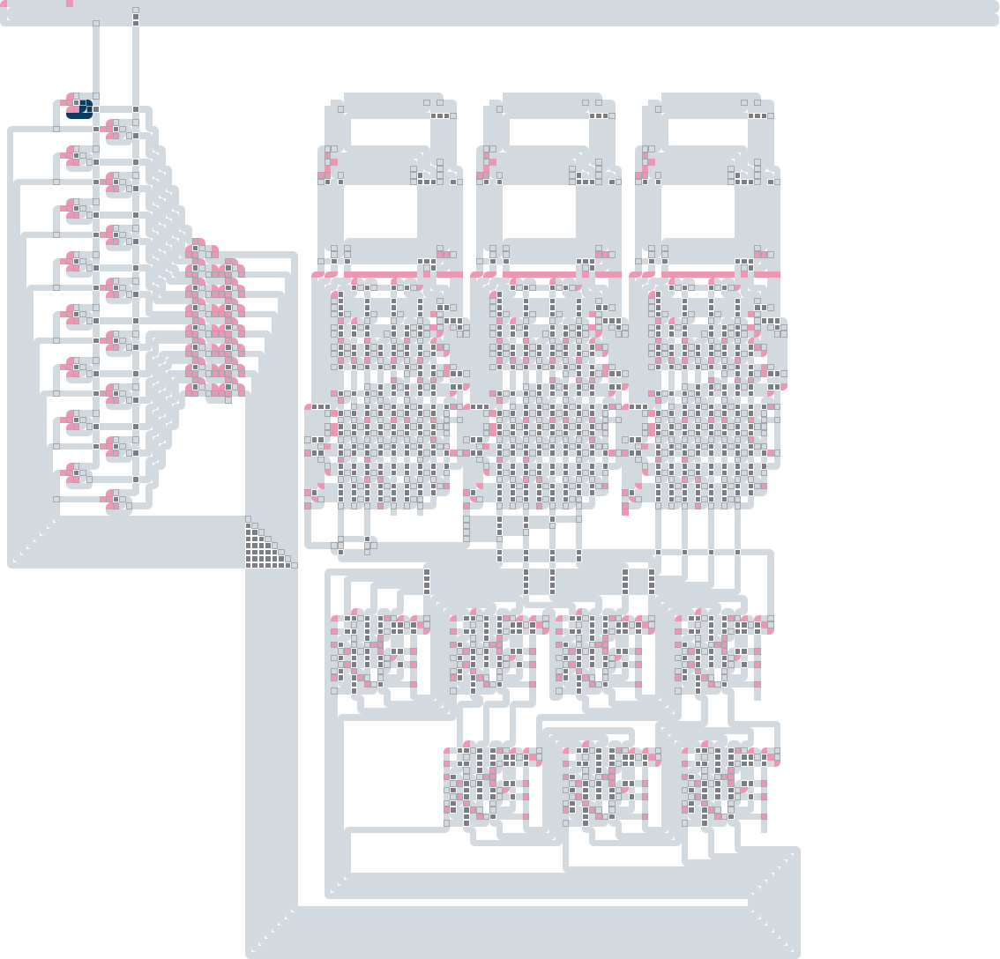
-
フィボナッチ数列 その2 (2023/01/24)
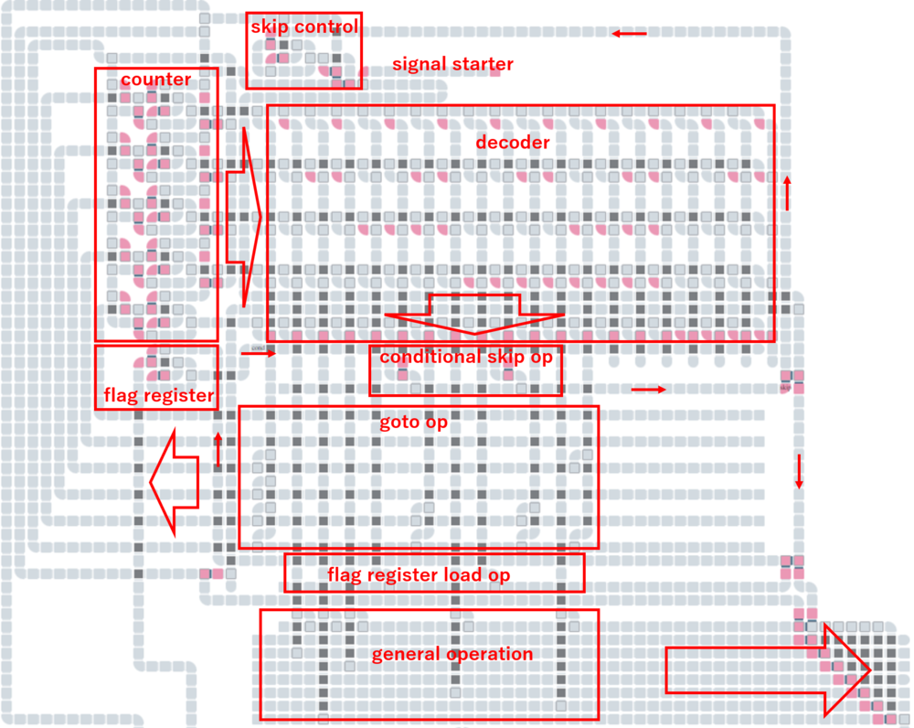
※話の順序と記事投稿の順序が一部前後しています。